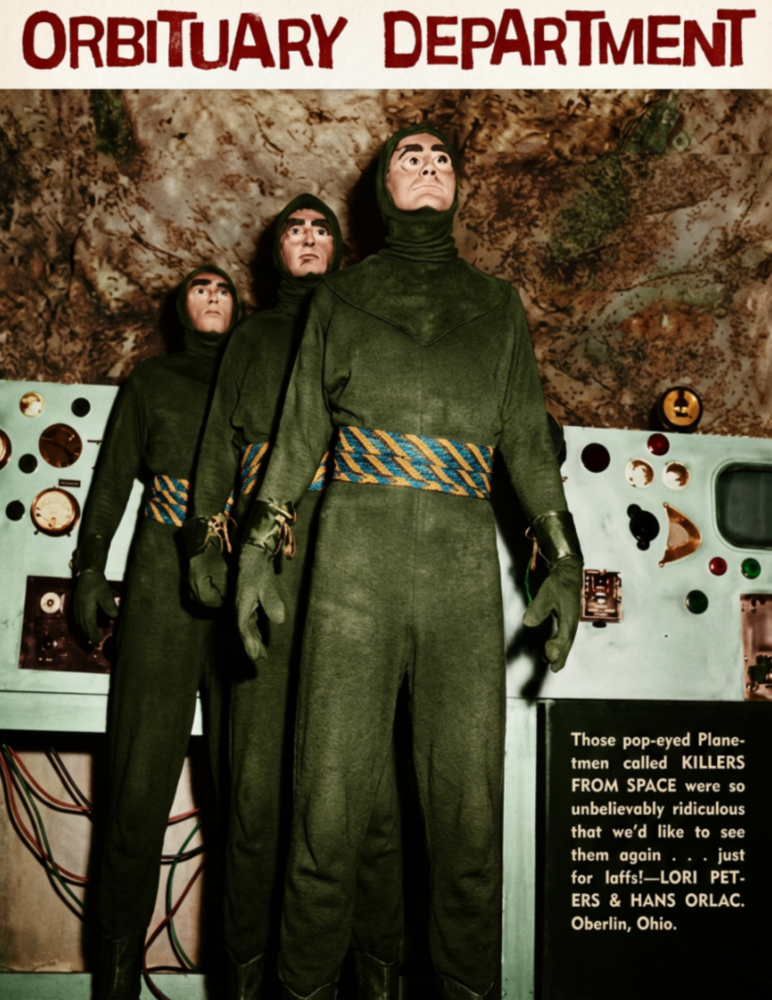

Remembering the Fallen
Their stories echo across the stars, reminding us of the cost of exploration.
Each name represents a chapter in humanity’s journey beyond Earth.
Dr. Elara Finch
A pioneering xenobiologist whose research unlocked the secrets of microbial life on Europa.
Commander Ryo Takeda
Lost during the first attempt to map the dark side of Titan. His final transmission remains classified.